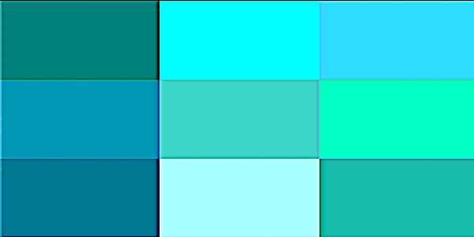

/* all these test styles need to move to external stylesheet */ ---
/* copy this code into my own css stylesheet */
My Final Project template
MENU
HOME
FOOD INDEX
DRINK INDEX
MUSIC
CONTACT
`
From My Kitchen...

Automatic Slideshow